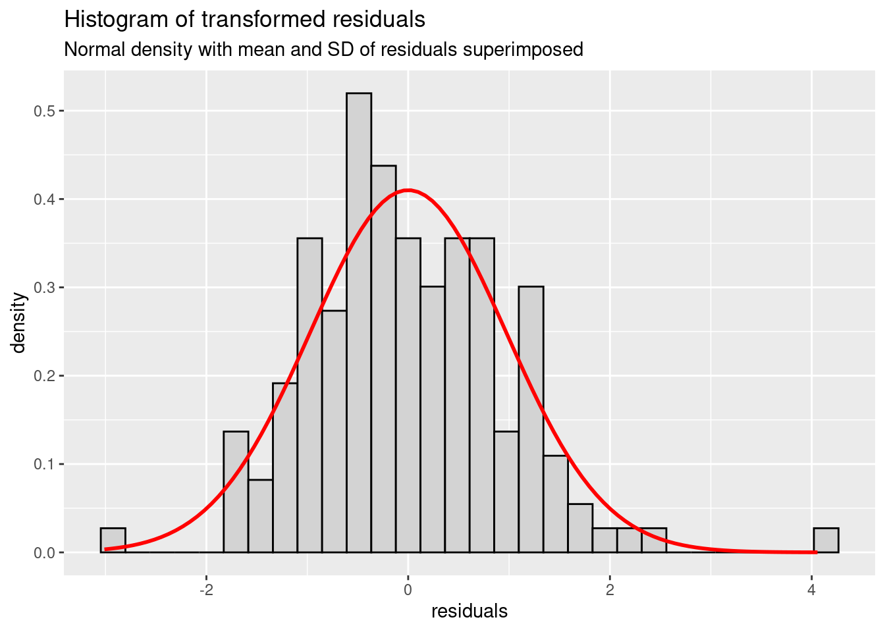
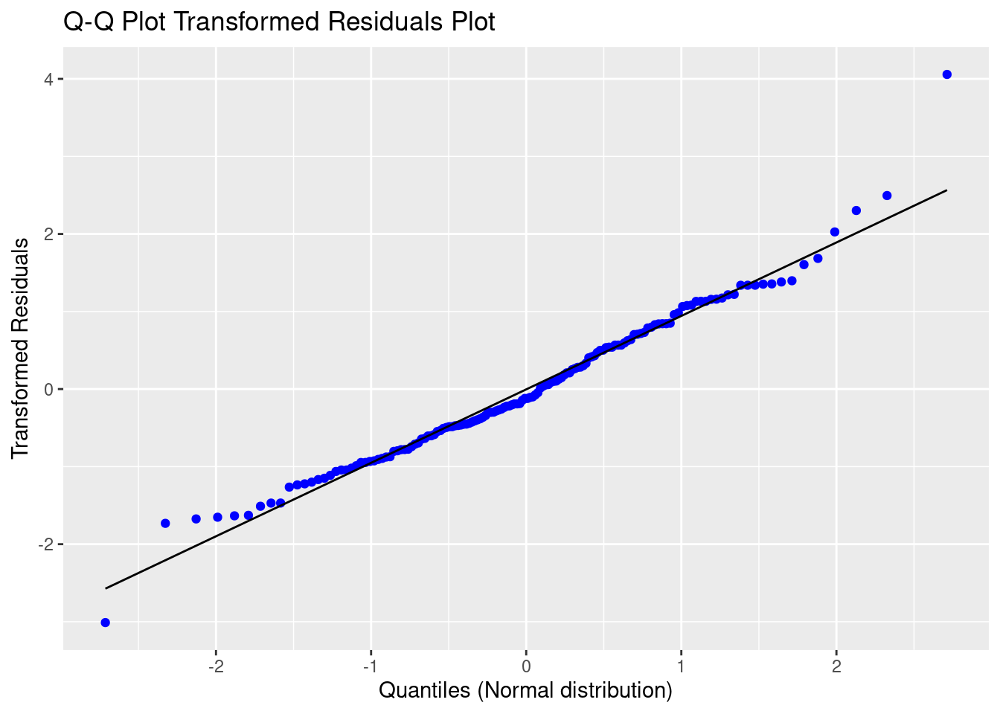
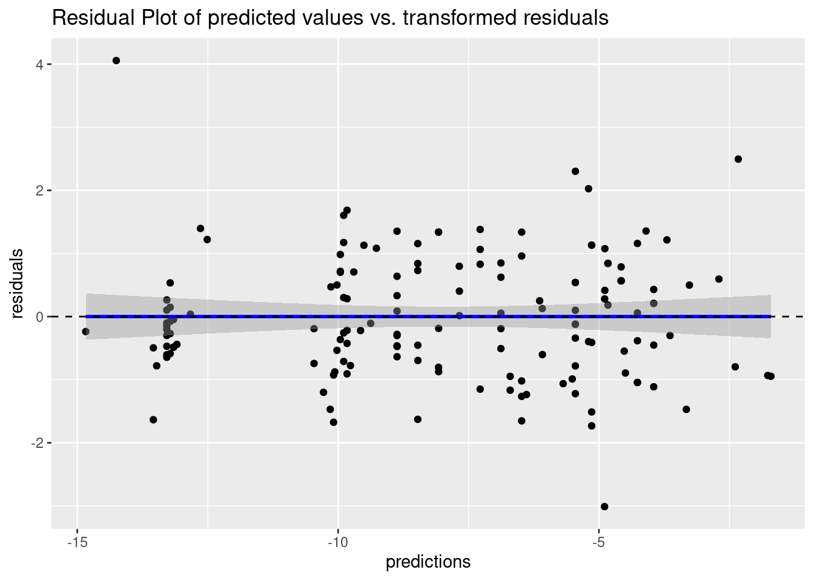
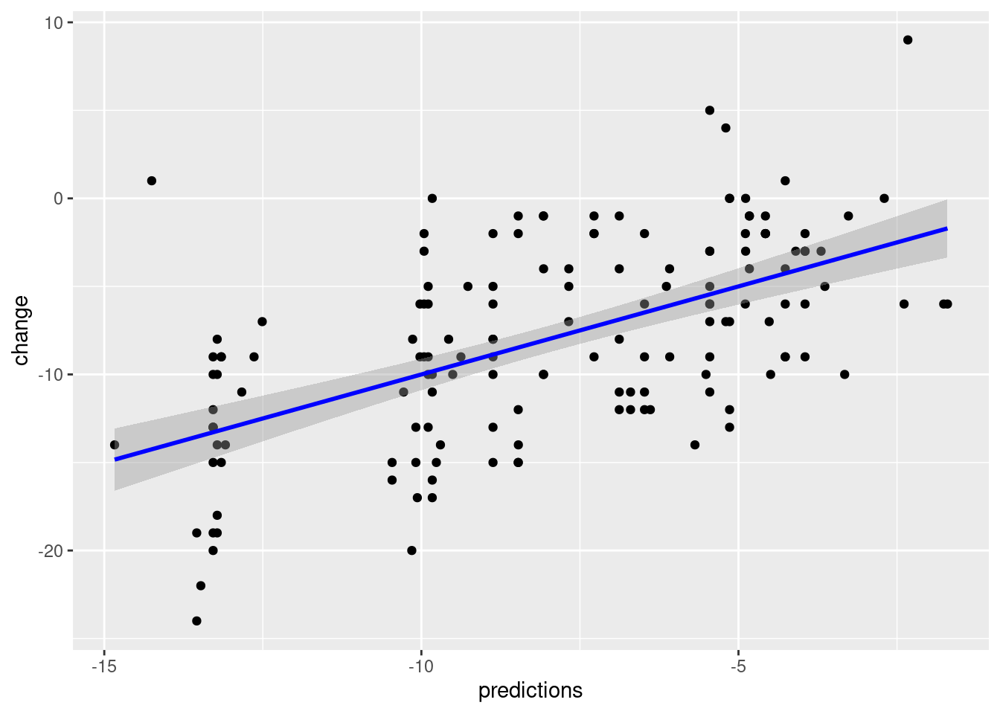

library(mmrm)
?mmrmInference from Longitudinal Data
This section will focus on the application of Mixed Model with Repeated Measures (MMRMs). Our main focus will be the modeling of the means of the data. MMRMs are generalizations of standard linear models in the way that data is allowed to be correlated between subsequent measurements from the same subject and exhibit non-constant variability. A nice summary can be found in the user manual for the MIXED Procedure SAS, or the vignette for the mmrm package (Sabanes Bove et al. 2024).
The primary assumptions for MMRMs are:
The data are normally distributed
The means (expected values) of the data are linear in terms of a certain set of parameters.
The variances and covariances of the data are in terms of a different set of parameters, and they exhibit a structure matching one of those outlined in the former chapter.
The mixed linear model can be described via the following formula
\[ y_i = X_i\beta\,+\,Z_i\gamma_i\,+\,\varepsilon_i\,,\, i = 1,\ldots,N \]
where \(y\) is the vector of responses (observed data, dependent variable), \(\beta\) is an unknown vector of fixed effects with known design matrix \(X\), \(\gamma\) is an unknown vector of random effects with known design matrix \(Z\), and \(\varepsilon\) is an unknown random error vector. Furthermore \(N\) denotes the total number of subjects in our analysis. For the sake of readability, we will omit the subject index and simplify the above formula to
\[ y = X\beta\,+\,Z\gamma\,+\,\varepsilon\,. \]
We will further assume that \(\gamma\) and \(\varepsilon\) are uncorrelated Gaussian random variables with expectation \(0\) and variances \(G\) and \(R\), respectively. Then the variance-covariance matrix of \(y\) is given by
\[ \text{Var}(y) := V = ZGZ' + R\,. \] In this case \(ZGZ'\) comprises the random effects component, and \(R\) is the within-subject component.
In this workshop we will focus on the case where only the within-subject component is accounted for, via modeling of the \(R\) matrix. The random effects component \(Z\gamma\) will be omitted. In this case we will have \(\text{Var}(y) = V = R\), resulting in a model given by
\[ y = X\beta\,+\,\varepsilon\,. \]
Categorical Time
In the following sections we will use the package mmrm (Sabanes Bove et al. 2024). You can start and familiarise yourself with the main function mmrm() using the command
Two inputs are strictly required to get mmrm() to work:
A model formula
The dataset, containing the response, as well as all fixed effects and variables in the covariance matrix.
Exercise: Fit a model fit_cat_time using the dataset all2, with change as dependent variable, baseline value, visit, baseline by visit interaction and treatment by visit interaction as fixed effects and an unstructured covariance matrix for visits within each subject.
How do different choices for covariance matrices change the results? What is the difference on the estimation procedure?
You can obtain a summary of the fit results via
summary(fit_cat_time). How do you interpret the fit summary?Look at the structure of the fit summary and try to extract the estimate of the \(R\) matrix.
How do other choices of covariance structures influence the estimation?
Unstructured (US)
Unstructured corresponds to a saturated variance-covariance matrix and involves the estimation of \(m\,(m+1)/2\) variance components, where \(m\) is the number of follow-up visits. In our case, we can see that a total of 6 variance parameters were estimated.
fit_cat_time <- mmrm::mmrm(
formula = change ~ basval*avisit + trt*avisit + us(avisit | subject),
data = all2,
control = mmrm_control(method = "Kenward-Roger")
)
summary(fit_cat_time)mmrm fit
Formula: change ~ basval * avisit + trt * avisit + us(avisit | subject)
Data: all2 (used 150 observations from 50 subjects with maximum 3
timepoints)
Covariance: unstructured (6 variance parameters)
Method: Kenward-Roger
Vcov Method: Kenward-Roger
Inference: REML
Model selection criteria:
AIC BIC logLik deviance
822.4 833.9 -405.2 810.4
Coefficients:
Estimate Std. Error df t value Pr(>|t|)
(Intercept) 1.98452 3.27479 47.00000 0.606 0.54743
basval -0.31235 0.15905 47.00000 -1.964 0.05548 .
avisitWeek 4 -0.90862 2.39866 47.00000 -0.379 0.70654
avisitWeek 8 -10.58630 3.45922 47.00000 -3.060 0.00365 **
trt2 -1.18993 1.27265 47.00000 -0.935 0.35457
basval:avisitWeek 4 -0.08542 0.11650 47.00000 -0.733 0.46704
basval:avisitWeek 8 0.24779 0.16801 47.00000 1.475 0.14691
avisitWeek 4:trt2 -0.80100 0.93217 47.00000 -0.859 0.39454
avisitWeek 8:trt2 -2.20106 1.34432 47.00000 -1.637 0.10825
---
Signif. codes: 0 '***' 0.001 '**' 0.01 '*' 0.05 '.' 0.1 ' ' 1
Covariance estimate:
Week 2 Week 4 Week 8
Week 2 20.6112 15.3034 12.2766
Week 4 15.3034 21.3565 17.6648
Week 8 12.2766 17.6648 27.6127We can assess the structure of the fit summary via
str(summary(fit_cat_time))List of 15
$ cov_type : chr "us"
$ reml : logi TRUE
$ n_groups : int 1
$ n_theta : int 6
$ n_subjects : int 50
$ n_timepoints : int 3
$ n_obs : int 150
$ beta_vcov : num [1:9, 1:9] 10.724 -0.501 -2.675 -4.267 -1.047 ...
..- attr(*, "dimnames")=List of 2
.. ..$ : chr [1:9] "(Intercept)" "basval" "avisitWeek 4" "avisitWeek 8" ...
.. ..$ : chr [1:9] "(Intercept)" "basval" "avisitWeek 4" "avisitWeek 8" ...
$ varcor : num [1:3, 1:3] 20.6 15.3 12.3 15.3 21.4 ...
..- attr(*, "dimnames")=List of 2
.. ..$ : chr [1:3] "Week 2" "Week 4" "Week 8"
.. ..$ : chr [1:3] "Week 2" "Week 4" "Week 8"
$ method : chr "Kenward-Roger"
$ vcov : chr "Kenward-Roger"
$ coefficients : num [1:9, 1:5] 1.985 -0.312 -0.909 -10.586 -1.19 ...
..- attr(*, "dimnames")=List of 2
.. ..$ : chr [1:9] "(Intercept)" "basval" "avisitWeek 4" "avisitWeek 8" ...
.. ..$ : chr [1:5] "Estimate" "Std. Error" "df" "t value" ...
$ n_singular_coefs: int 0
$ aic_list :List of 4
..$ AIC : num 822
..$ BIC : num 834
..$ logLik : num -405
..$ deviance: num 810
$ call : language mmrm::mmrm(formula = change ~ basval * avisit + trt * avisit + us(avisit | subject), data = all2, control = | __truncated__
- attr(*, "class")= chr "summary.mmrm"and then extract the covariance matrix
summary(fit_cat_time)$varcor Week 2 Week 4 Week 8
Week 2 20.61117 15.30339 12.27661
Week 4 15.30339 21.35648 17.66478
Week 8 12.27661 17.66478 27.61271Compound Symmetry (CS)
We can choose different types of covariance structures by modification of the model formula.
The compound symmetry structure assumes equal variances (diagonal elements are all equal) and equal covariances (off-diagonal elements are all equal). From the model summary we can see that two variance-covariance parameters are estimated.
This model is the most simple choice of repeated measures variance-covariance modeling. In most cases, it is overly simplistic, but can be a good fallback option in case of model non-convergence (especially when prespecification of analysis methods is required).
fit_cat_time_cs <- mmrm::mmrm(
formula = change ~ basval*avisit + trt*avisit + cs(avisit | subject),
data = all2,
control = mmrm_control(method = "Kenward-Roger")
)
summary(fit_cat_time_cs)mmrm fit
Formula: change ~ basval * avisit + trt * avisit + cs(avisit | subject)
Data: all2 (used 150 observations from 50 subjects with maximum 3
timepoints)
Covariance: compound symmetry (2 variance parameters)
Method: Kenward-Roger
Vcov Method: Kenward-Roger
Inference: REML
Model selection criteria:
AIC BIC logLik deviance
827.2 831.0 -411.6 823.2
Coefficients:
Estimate Std. Error df t value Pr(>|t|)
(Intercept) 1.98452 3.48848 76.39000 0.569 0.571107
basval -0.31235 0.16943 76.39000 -1.844 0.069126 .
avisitWeek 4 -0.90862 2.91606 94.00000 -0.312 0.756042
avisitWeek 8 -10.58630 2.91606 94.00000 -3.630 0.000461 ***
trt2 -1.18993 1.35569 76.39000 -0.878 0.382845
basval:avisitWeek 4 -0.08542 0.14163 94.00000 -0.603 0.547856
basval:avisitWeek 8 0.24779 0.14163 94.00000 1.750 0.083448 .
avisitWeek 4:trt2 -0.80100 1.13324 94.00000 -0.707 0.481424
avisitWeek 8:trt2 -2.20106 1.13324 94.00000 -1.942 0.055098 .
---
Signif. codes: 0 '***' 0.001 '**' 0.01 '*' 0.05 '.' 0.1 ' ' 1
Covariance estimate:
Week 2 Week 4 Week 8
Week 2 23.1948 15.0832 15.0832
Week 4 15.0832 23.1948 15.0832
Week 8 15.0832 15.0832 23.1948Toeplitz (TOEP)
Use of the Toeplitz structure is not a very sensible choice here, as visits are not equally spaced, i.e. the difference between baseline and time1, and time1 and time2 is 2 weeks, respectively, while the difference between time2 and time3 is 4 weeks. Toeplitz thus ignores the differences in time spacing.
We can see that the covariance estimates for responses at Week 2 (time1) and Week 4 (time2) are the same as the ones for responses at Week 4 (time2) and Week 8 (time3), although their time difference doubles.
The same line of reasoning for the lack of sensibility of the Toeplitz structure can be applied to the autoregressive structure (AR(1)). The example is not shown here.
fit_cat_time_toep <- mmrm::mmrm(
formula = change ~ basval*avisit + trt*avisit + toep(avisit | subject),
data = all2,
control = mmrm_control(method = "Kenward-Roger")
)
summary(fit_cat_time_toep)mmrm fit
Formula: change ~ basval * avisit + trt * avisit + toep(avisit | subject)
Data: all2 (used 150 observations from 50 subjects with maximum 3
timepoints)
Covariance: Toeplitz (3 variance parameters)
Method: Kenward-Roger
Vcov Method: Kenward-Roger
Inference: REML
Model selection criteria:
AIC BIC logLik deviance
818.6 824.3 -406.3 812.6
Coefficients:
Estimate Std. Error df t value Pr(>|t|)
(Intercept) 1.98452 3.52061 74.67000 0.564 0.57466
basval -0.31235 0.17099 74.67000 -1.827 0.07174 .
avisitWeek 4 -0.90862 2.56351 92.39000 -0.354 0.72381
avisitWeek 8 -10.58630 3.43000 56.08000 -3.086 0.00315 **
trt2 -1.18993 1.36818 74.67000 -0.870 0.38724
basval:avisitWeek 4 -0.08542 0.12450 92.39000 -0.686 0.49436
basval:avisitWeek 8 0.24779 0.16659 56.08000 1.487 0.14249
avisitWeek 4:trt2 -0.80100 0.99623 92.39000 -0.804 0.42344
avisitWeek 8:trt2 -2.20106 1.33297 56.08000 -1.651 0.10428
---
Signif. codes: 0 '***' 0.001 '**' 0.01 '*' 0.05 '.' 0.1 ' ' 1
Covariance estimate:
Week 2 Week 4 Week 8
Week 2 23.6312 17.3491 12.3576
Week 4 17.3491 23.6312 17.3491
Week 8 12.3576 17.3491 23.6312Spatial Power (SP_EXP)
The choice of the spatial power variance-covariance structure makes sense here, as the visits are not equally spaced. In this case, two parameters are estimated. The first parameter is the variance (diagonal elements) and second one is the time difference between subsequent visits.
Note that in this example, we need to use the numeric week variable, as spatial power requires the information about the distance of subsequent visits in the estimation of the variance-covariance matrix.
We can see from the fit summary, that the covariance displayed is a 2 * 2 square matrix. As the distance will be used to derive the corresponding element in that matrix, unit distance is used here.
fit_cat_time_sp <- mmrm::mmrm(
formula = change ~ basval*avisit + trt*avisit + sp_exp(week | subject),
data = all2,
control = mmrm_control(method = "Kenward-Roger")
)
summary(fit_cat_time_sp)mmrm fit
Formula: change ~ basval * avisit + trt * avisit + sp_exp(week | subject)
Data: all2 (used 150 observations from 50 subjects with maximum 3
timepoints)
Covariance: spatial exponential (2 variance parameters)
Method: Kenward-Roger
Vcov Method: Kenward-Roger
Inference: REML
Model selection criteria:
AIC BIC logLik deviance
818.5 822.4 -407.3 814.5
Coefficients:
Estimate Std. Error df t value Pr(>|t|)
(Intercept) 1.98452 3.54179 76.71000 0.560 0.57690
basval -0.31235 0.17202 76.71000 -1.816 0.07331 .
avisitWeek 4 -0.90862 2.24976 84.19000 -0.404 0.68733
avisitWeek 8 -10.58630 3.52591 117.26000 -3.002 0.00327 **
trt2 -1.18993 1.37641 76.71000 -0.865 0.39000
basval:avisitWeek 4 -0.08542 0.10927 84.19000 -0.782 0.43653
basval:avisitWeek 8 0.24779 0.17125 117.26000 1.447 0.15057
avisitWeek 4:trt2 -0.80100 0.87430 84.19000 -0.916 0.36220
avisitWeek 8:trt2 -2.20106 1.37024 117.26000 -1.606 0.11089
---
Signif. codes: 0 '***' 0.001 '**' 0.01 '*' 0.05 '.' 0.1 ' ' 1
Covariance estimate:
0 1
0 23.9079 21.3749
1 21.3749 23.9079Conclusion
While the unstructured variance-covariance matrix provides the highest degree of flexibility, we can see from the AIC and BIC estimates that spatial power in our example provides and even better fit in comparison to the model complexity. Note that this is also true for the Toeplitz structure, but we rejected this approach as the unequal spacing of visits renders this approach nonsensible.
Continuous Time
Time as continuous effect -> single df for time and trt-by-time interaction
Modeling: - Need avisit for structure of covariance matrix - Implicit assumption is for the covariance between values for two timepoints to be equal, regardless of the specific timing
fit_cont_time <- mmrm::mmrm(
formula = change ~ basval*week + trt*week + us(avisit | subject),
weights = all2$week,
data = all2,
control = mmrm_control(method = "Kenward-Roger")
)
summary (fit_cont_time)mmrm fit
Formula: change ~ basval * week + trt * week + us(avisit | subject)
Data: all2 (used 150 observations from 50 subjects with maximum 3
timepoints)
Weights: all2$week
Covariance: unstructured (6 variance parameters)
Method: Kenward-Roger
Vcov Method: Kenward-Roger
Inference: REML
Model selection criteria:
AIC BIC logLik deviance
838.0 849.5 -413.0 826.0
Coefficients:
Estimate Std. Error df t value Pr(>|t|)
(Intercept) 6.83666 3.82960 47.00000 1.785 0.08068 .
basval -0.47981 0.18600 47.00000 -2.580 0.01308 *
week -1.94296 0.57420 47.00000 -3.384 0.00145 **
trt2 -0.49024 1.48826 47.00000 -0.329 0.74331
basval:week 0.05275 0.02789 47.00000 1.892 0.06472 .
week:trt2 -0.36226 0.22315 47.00000 -1.623 0.11119
---
Signif. codes: 0 '***' 0.001 '**' 0.01 '*' 0.05 '.' 0.1 ' ' 1
Covariance estimate:
Week 2 Week 4 Week 8
Week 2 41.3658 42.8600 49.0752
Week 4 42.8600 86.6690 100.0141
Week 8 49.0752 100.0141 220.9000Can also apply non-linear transformations of time variable, in case the anticipated effect is not necessarily linear in time:
all2$timesq <- all2$week^2
fit_cont_timesq <- mmrm::mmrm(
formula = change ~ basval*timesq + trt*timesq + us(avisit | subject),
weights = all2$week,
data = all2,
control = mmrm_control(method = "Kenward-Roger")
)
summary(fit_cont_timesq)mmrm fit
Formula: change ~ basval * timesq + trt * timesq + us(avisit | subject)
Data: all2 (used 150 observations from 50 subjects with maximum 3
timepoints)
Weights: all2$week
Covariance: unstructured (6 variance parameters)
Method: Kenward-Roger
Vcov Method: Kenward-Roger
Inference: REML
Model selection criteria:
AIC BIC logLik deviance
861.8 873.3 -424.9 849.8
Coefficients:
Estimate Std. Error df t value Pr(>|t|)
(Intercept) 3.298095 3.300323 47.000000 0.999 0.32275
basval -0.396751 0.160290 47.000000 -2.475 0.01698 *
timesq -0.191395 0.053074 47.000000 -3.606 0.00075 ***
trt2 -1.224631 1.282574 47.000000 -0.955 0.34455
basval:timesq 0.005800 0.002578 47.000000 2.250 0.02916 *
timesq:trt2 -0.032220 0.020626 47.000000 -1.562 0.12497
---
Signif. codes: 0 '***' 0.001 '**' 0.01 '*' 0.05 '.' 0.1 ' ' 1
Covariance estimate:
Week 2 Week 4 Week 8
Week 2 42.2220 41.1223 47.8394
Week 4 41.1223 90.1270 102.6988
Week 8 47.8394 102.6988 222.5403(Adjusted) LS Means from MMRMs
LS Means are means of the dependent variable adjusted for covariates in the statistical model. We can obtain LS Means estimates and contrasts allowing for a treatment comparison using the emmeans package.
Example: Calculate the observed (raw) means of changes along with number of patients by treatment group from the dataset all2 overall and by visit. Then take the model fit_cat_time and derive the respective LS Means from the model. What do you observe?
# Raw means
all2 %>%
dplyr::group_by(group) %>%
dplyr::summarise(
N = dplyr::n(),
Mean = mean(change),
.groups = "drop"
)# A tibble: 2 × 3
group N Mean
<fct> <int> <dbl>
1 Arm 1 75 -6.96
2 Arm 2 75 -9.03all2 %>%
dplyr::group_by(group, avisit) %>%
dplyr::summarise(
N = dplyr::n(),
Mean = mean(change),
.groups = "drop"
)# A tibble: 6 × 4
group avisit N Mean
<fct> <fct> <int> <dbl>
1 Arm 1 Week 2 25 -4.2
2 Arm 1 Week 4 25 -6.8
3 Arm 1 Week 8 25 -9.88
4 Arm 2 Week 2 25 -5.24
5 Arm 2 Week 4 25 -8.6
6 Arm 2 Week 8 25 -13.2 The respective LS Means from the model with time as a fixed factor yields the following estimates:
library(emmeans)
emmeans::ref_grid(fit_cat_time)'emmGrid' object with variables:
basval = 19.56
avisit = Week 2, Week 4, Week 8
trt = 1, 2emmeans(fit_cat_time, ~trt)NOTE: Results may be misleading due to involvement in interactions trt emmean SE df lower.CL upper.CL
1 -6.90 0.836 47 -8.58 -5.22
2 -9.09 0.836 47 -10.77 -7.41
Results are averaged over the levels of: avisit
Confidence level used: 0.95 emmeans(fit_cat_time, ~trt*avisit) trt avisit emmean SE df lower.CL upper.CL
1 Week 2 -4.13 0.899 47 -5.93 -2.32
2 Week 2 -5.31 0.899 47 -7.12 -3.51
1 Week 4 -6.70 0.916 47 -8.55 -4.86
2 Week 4 -8.70 0.916 47 -10.54 -6.85
1 Week 8 -9.86 1.033 47 -11.94 -7.79
2 Week 8 -13.26 1.033 47 -15.33 -11.18
Confidence level used: 0.95 Observed vs. balanced margins
In the example above we have used the standard option for the weights in the calculation of LS Means. We will delve deeper into the following two options and will try to understand the difference:
weights = "equal": Each stratum induced by covariate levels is assigned the same weight in the calculation of the LS Means. This is the default option.weights = "proportional": Each stratum induced by covariate levels is assigned a weight according to their observed proportion in the calculation of the LS Mean. This option gives each stratum a weight corresponding to its size. Estimates using this option are reflective of the balance of covariates in the data.
Exercise: Based on the fit_cat_time model, compare the LS Means for the change in the response variable by treatment overall and treatment by visit interaction using the different options for weight. Compare the results for the two LS Means options to the observed means and to one another.
Discuss the following points:
- Why is there no difference between LS Means estimates for the overall treatment effect and the treatment by visit interaction? (Hint: Create a frequency table)
Now update the fit_cat_time model to fit_cat_time2, and include the covariate gender. Estimate the same LS Means for the change in the response variable by treatment (overall) and treatment by visit interaction.
Why is there a difference now between results from the different LS Means options? (Hint: another frequency table can help)
What effect could missing data have on the estimation, even in the case of
fit_cat_time? I.e. what would happen if this data was not complete but subject to missingness, with the degree of missing data increasing over time and being disproportionate between treatment arms?
Solution:
We first calculate the LS Means, using the different weights options and find they are indeed identical.
# These will yield the same results:
emmeans(fit_cat_time, ~trt, weights = "equal")NOTE: Results may be misleading due to involvement in interactions trt emmean SE df lower.CL upper.CL
1 -6.90 0.836 47 -8.58 -5.22
2 -9.09 0.836 47 -10.77 -7.41
Results are averaged over the levels of: avisit
Confidence level used: 0.95 emmeans(fit_cat_time, ~trt, weights = "proportional")NOTE: Results may be misleading due to involvement in interactions trt emmean SE df lower.CL upper.CL
1 -6.90 0.836 47 -8.58 -5.22
2 -9.09 0.836 47 -10.77 -7.41
Results are averaged over the levels of: avisit
Confidence level used: 0.95 emmeans(fit_cat_time, ~trt*avisit, weights = "equal") trt avisit emmean SE df lower.CL upper.CL
1 Week 2 -4.13 0.899 47 -5.93 -2.32
2 Week 2 -5.31 0.899 47 -7.12 -3.51
1 Week 4 -6.70 0.916 47 -8.55 -4.86
2 Week 4 -8.70 0.916 47 -10.54 -6.85
1 Week 8 -9.86 1.033 47 -11.94 -7.79
2 Week 8 -13.26 1.033 47 -15.33 -11.18
Confidence level used: 0.95 emmeans(fit_cat_time, ~trt*avisit, weights = "proportional") trt avisit emmean SE df lower.CL upper.CL
1 Week 2 -4.13 0.899 47 -5.93 -2.32
2 Week 2 -5.31 0.899 47 -7.12 -3.51
1 Week 4 -6.70 0.916 47 -8.55 -4.86
2 Week 4 -8.70 0.916 47 -10.54 -6.85
1 Week 8 -9.86 1.033 47 -11.94 -7.79
2 Week 8 -13.26 1.033 47 -15.33 -11.18
Confidence level used: 0.95 Now we can update the model to include the covariate gender. We can specify this a new model using the mmrm() function again, or simply use update() to add the new covariate to the model. Either way is fine, and a look into the model formula from the fit summary shows the two approaches work interchangeably.
fit_cat_time2 <- update(fit_cat_time, . ~ . + gender)
summary(fit_cat_time2)mmrm fit
Formula:
change ~ basval + avisit + trt + (us(avisit | subject)) + gender +
basval:avisit + avisit:trt
Data: all2 (used 150 observations from 50 subjects with maximum 3
timepoints)
Covariance: unstructured (6 variance parameters)
Method: Kenward-Roger
Vcov Method: Kenward-Roger
Inference: REML
Model selection criteria:
AIC BIC logLik deviance
817.0 828.5 -402.5 805.0
Coefficients:
Estimate Std. Error df t value Pr(>|t|)
(Intercept) 0.47589 3.23944 46.14000 0.147 0.88385
basval -0.30674 0.15200 45.44000 -2.018 0.04951 *
avisitWeek 4 -0.90862 2.39786 47.00000 -0.379 0.70645
avisitWeek 8 -10.58630 3.45626 47.00000 -3.063 0.00362 **
trt2 -0.34868 1.30287 46.74000 -0.268 0.79016
genderM 2.32931 1.29556 45.99000 1.798 0.07876 .
basval:avisitWeek 4 -0.08542 0.11646 47.00000 -0.734 0.46689
basval:avisitWeek 8 0.24779 0.16786 47.00000 1.476 0.14657
avisitWeek 4:trt2 -0.80100 0.93186 47.00000 -0.860 0.39439
avisitWeek 8:trt2 -2.20106 1.34318 47.00000 -1.639 0.10795
---
Signif. codes: 0 '***' 0.001 '**' 0.01 '*' 0.05 '.' 0.1 ' ' 1
Covariance estimate:
Week 2 Week 4 Week 8
Week 2 18.8295 14.3160 12.0002
Week 4 14.3160 21.1623 18.1813
Week 8 12.0002 18.1813 28.8384A look into the reference grid shows us the new factor levels for gender. Note that gender itself will not be included in the emmeans() statement, but the output indicates the averaging over its levels (same for the levels of avisit)
# Reference grid shows us the new levels
emmeans::ref_grid(fit_cat_time2)'emmGrid' object with variables:
basval = 19.56
avisit = Week 2, Week 4, Week 8
trt = 1, 2
gender = F, M# These two won't yield the same results
emmeans(fit_cat_time2, ~trt*avisit, weights = "equal") trt avisit emmean SE df lower.CL upper.CL
1 Week 2 -4.36 0.869 45.7 -6.11 -2.61
2 Week 2 -4.71 0.923 46.8 -6.57 -2.85
1 Week 4 -6.94 0.920 46.4 -8.79 -5.09
2 Week 4 -8.09 0.972 48.1 -10.04 -6.13
1 Week 8 -10.10 1.063 45.5 -12.24 -7.96
2 Week 8 -12.65 1.108 48.2 -14.88 -10.42
Results are averaged over the levels of: gender
Confidence level used: 0.95 emmeans(fit_cat_time2, ~trt*avisit, weights = "proportional") trt avisit emmean SE df lower.CL upper.CL
1 Week 2 -4.55 0.890 46.2 -6.34 -2.75
2 Week 2 -4.89 0.890 46.2 -6.69 -3.10
1 Week 4 -7.13 0.941 47.1 -9.02 -5.23
2 Week 4 -8.27 0.941 47.1 -10.17 -6.38
1 Week 8 -10.29 1.081 46.6 -12.46 -8.11
2 Week 8 -12.83 1.081 46.6 -15.01 -10.66
Results are averaged over the levels of: gender
Confidence level used: 0.95 The following frequency table shows the imbalance in the distribution of the gender variable. We can see that Treatment 1 has more men than women, whereas Treatment 2 has more women than men.
table(all2$trt, all2$gender)
F M
1 30 45
2 57 18The data is no longer balanced across the covariates in the model. The weights = "equal" option is agnostic to this imbalance and assigns all levels equal weights, whereas the weights = "proportional" assigns a weight reflecting the proportional size of the stratum over which the average is taken.
Contrasts
Most of the times, the quantity we are truly interested in when reading out a study, is the contrast between treatment arms. This contrast can be built either based on LS Means at some landmark time point, or as a longitudinal (linear) combination of LS Means from multiple time points.
We can use the pairs() or the contrast() functions, where the latter provides more flexibility for the calculation of linear combinations from multiple timepoints.
lsmns <- emmeans::emmeans(fit_cat_time, ~trt*avisit, weights = "proportional")
pairs(lsmns, reverse = TRUE, adjust = NULL) contrast estimate SE df t.ratio p.value
trt2 Week 2 - trt1 Week 2 -1.19 1.273 47.0 -0.935 0.3546
trt1 Week 4 - trt1 Week 2 -2.58 0.659 47.0 -3.917 0.0003
trt1 Week 4 - trt2 Week 2 -1.39 1.284 61.3 -1.082 0.2835
trt2 Week 4 - trt1 Week 2 -4.57 1.284 61.3 -3.559 0.0007
trt2 Week 4 - trt2 Week 2 -3.38 0.659 47.0 -5.133 <.0001
trt2 Week 4 - trt1 Week 4 -1.99 1.296 47.0 -1.536 0.1313
trt1 Week 8 - trt1 Week 2 -5.74 0.950 47.0 -6.043 <.0001
trt1 Week 8 - trt2 Week 2 -4.55 1.370 73.3 -3.321 0.0014
trt1 Week 8 - trt1 Week 4 -3.16 0.716 47.0 -4.416 0.0001
trt1 Week 8 - trt2 Week 4 -1.17 1.381 61.1 -0.846 0.4007
trt2 Week 8 - trt1 Week 2 -9.13 1.370 73.3 -6.664 <.0001
trt2 Week 8 - trt2 Week 2 -7.94 0.950 47.0 -8.361 <.0001
trt2 Week 8 - trt1 Week 4 -6.55 1.381 61.1 -4.742 <.0001
trt2 Week 8 - trt2 Week 4 -4.56 0.716 47.0 -6.373 <.0001
trt2 Week 8 - trt1 Week 8 -3.39 1.462 47.0 -2.319 0.0248### This is the same as the following
prs <- contrast(lsmns, method = "revpairwise", adjust = NULL)Note that both pairs() and contrast() provide multiple options for fine-tuning. We chose adjust = NULL in order to not perform any multiplicity adjustment (default method would have been the Tukey method). We also chose reverse = TRUE to reverse the order of comparisons performed by pairs(), as the default would have given us the contrast for Treatment 1 - Treatment 2. Consequently, we applied method = "revpairwise" in the contrast() function.
We can obtain the coefficients in the calculation of the contrasts via coef():
coef(prs) trt avisit c.1 c.2 c.3 c.4 c.5 c.6 c.7 c.8 c.9 c.10 c.11 c.12 c.13
trt1 Week 2 1 Week 2 -1 -1 0 -1 0 0 -1 0 0 0 -1 0 0
trt2 Week 2 2 Week 2 1 0 -1 0 -1 0 0 -1 0 0 0 -1 0
trt1 Week 4 1 Week 4 0 1 1 0 0 -1 0 0 -1 0 0 0 -1
trt2 Week 4 2 Week 4 0 0 0 1 1 1 0 0 0 -1 0 0 0
trt1 Week 8 1 Week 8 0 0 0 0 0 0 1 1 1 1 0 0 0
trt2 Week 8 2 Week 8 0 0 0 0 0 0 0 0 0 0 1 1 1
c.14 c.15
trt1 Week 2 0 0
trt2 Week 2 0 0
trt1 Week 4 0 0
trt2 Week 4 -1 0
trt1 Week 8 0 -1
trt2 Week 8 1 1The output above is probably more than we wanted. We are only interested in contrasts between Treatments 1 and 2 at the same time points. Here contrast() provides more flexibility. Instead of parsing a string with the name of a method to the method argument, we provide a named list of coefficients. These coefficients are identical with the onces we can see in the coefficient matrix above. We can use it as a guide.
contrast(
lsmns,
method = list(
"Difference Trt 2 - Trt 1 at Week 4" = c(0, 0, -1, 1, 0, 0),
"Difference Trt 2 - Trt 1 at Week 8" = c(0, 0, 0, 0, -1, 1)
),
adjust = NULL) contrast estimate SE df t.ratio p.value
Difference Trt 2 - Trt 1 at Week 4 -1.99 1.30 47 -1.536 0.1313
Difference Trt 2 - Trt 1 at Week 8 -3.39 1.46 47 -2.319 0.0248This way of computing LS Means from our MMRM allows us to calculate all kinds of linear combinations of LS Means. Assume we were interested in the longitudinal mean of changes from baseline averaged over Weeks 2, 4 and 8. This would look like this:
contrast(
lsmns,
method = list(
"Difference Trt 2 - Trt 1 Averaged over Weeks 2, 4 and 8" = c(-1, 1, -1, 1, -1, 1)/3
),
adjust = NULL) contrast estimate SE df
Difference Trt 2 - Trt 1 Averaged over Weeks 2, 4 and 8 -2.19 1.18 47
t.ratio p.value
-1.850 0.0705Fit diagnostics
The following section closely follows the content in Chapter 10 in (Fitzmaurice 2011).
Our analysis should be concluded with a look into the fit diagnostics, more specifically, the residuals. Residuals are defined by the difference between the true responses and the fitted values from the model:
\[ r := y - X\hat\beta\,, \] where \(\hat\beta\) are the estimated coefficients from our model. Residuals provide an estimate of the true vector of random errors
\[ \varepsilon = y - X\beta\,. \]
As per our modeling assumptions, \(\varepsilon\) should follow a normal distribution with mean zero. The mean of the residuals is zero and therefore identical with the mean of the error term. For the covariance of the residuals however, the variance-covariance matrix of \(\varepsilon\) only serves us as an approximation (as suggested by (Fitzmaurice 2011) for all ‘practical applications’):
\[ Cov(r) \approx Cov(\varepsilon) = R\,. \] This assumption has several implications on the residual diagnostics:
The variance is not necessarily constant. Plotting the fitted values versus the residuals might therefore lead to a non-constant range. An examination of the residual variance or autocorrelation among residuals is therefore not very meaningful.
Residuals from analyses of longitudinal data can exhibit correlation with the covariates. Scatterplots of residuals versus selected covariates can therefore reveal systematic trends (which normally should not be the case).
A transformation of residuals to achieve constant variance and zero correlation is therefore often useful. This transformation uses the so-called Cholesky decomposition of the variance-covariance matrix \(R\). Let \(L\) be a lower triangular matrix, such that
\[
R = L\,L'\,,
\] then the transformed residuals are given by \[
r^* = L^{-1}(y - X\beta)\,.
\] In the mmrm package, transformed residuals can be derived using the type = "normalized" option.
Exercise: Which visualisations can you think of that make sense to assess the goodness of fit here? Create a new tibble (or data.frame) containing the variables of importance and try plotting them in a meaningful way. Discuss the results within your group.
Solution:
To avoid repetition, let us first save the important variables to perform fit diagnostics in a tibble.
df_residuals <- dplyr::tibble(
residuals = residuals(fit_cat_time, type = "normalized"),
predictions = fitted(fit_cat_time),
all2
)We can firstly look into a histogram of transformed residuals. The shape should resemble the density function of normal distribution with mean zero and positive variance. Superimposing the density function with mean and SD derived from the model residuals, let’s us see that this is indeed the case. We can also detect a slight skewness to the right.
library(ggplot2)
df_residuals %>%
ggplot(aes(x = residuals)) +
geom_histogram(aes(y = after_stat(density)), fill='lightgray', col='black') +
stat_function(fun = dnorm, args = list(mean=mean(df_residuals$residuals), sd=sd(df_residuals$residuals)), col='red', lwd=1) +
ggtitle(
label = "Histogram of transformed residuals",
subtitle = "Normal density with mean and SD of residuals superimposed"
)
Alternatively, we can create a Q-Q-Plot.
df_residuals %>%
ggplot(aes(sample = residuals)) +
stat_qq(color = "blue") +
stat_qq_line() +
labs(
x = "Quantiles (Normal distribution)",
y = "Transformed Residuals"
) +
ggtitle(
label = "Q-Q Plot Transformed Residuals Plot"
)
How to interprete the Q-Q plot:
We can use the following fourfold table to assess the shape characteristics derivable from this plot, depending on where the data on which end of the plot is bend compared to the linear trend line:
| Upper right corner | |||
|---|---|---|---|
| Above | Below | ||
| Lower left corner | Above | Skewed to the right | Light-tailed |
| Lower left corner | Below | Heavy-tailed | Skewed to the left |
We can see that our data is skewed to the right, as the data in the upper right corner and data in the lower left corner of the plot bend above the linear trend line. This is also a trend we can observe from the histogram.
df_residuals %>%
ggplot(aes(x = predictions, y = residuals)) +
geom_point() +
geom_smooth(method = lm, color = "blue") +
geom_hline(yintercept = 0, show.legend = FALSE, linetype = 2) +
ggtitle(
label = "Residual Plot of predicted values vs. transformed residuals"
)
What do we see?
The points in the plot look well dispersed and symmetric around zero. The fitted line shows no departure from zero.
There is no systematic trend, but a rather random scatter.
We can spot a couple of outliers.
df_residuals %>%
ggplot(aes(x = predictions, y = change)) +
geom_point() +
geom_smooth(method = lm, color = "blue")
Baseline as a Response (cLDA + LDA)
In the former examples we used baseline severity as a continuous covariate, which is the most common approach. In this case we treat baseval as a fixed effect and used changes from baseline as response variable in our model formula. This approach comes with a couple of caveats:
Only subjects with a non-missing baseline and at least one non-missing follow-up response contribute to the analysis (i.e. at least one non-missing change from baseline value).
Only subjects with complete covariate data contribute to the analysis.
Hence, if baseval is missing for a subject, this subject will not be included in our model. (Liang and Zeger 2000) introduced the so-called LDA (longitudinal data analysis) and cLDA (constrained longitudinal data analysis) models. The basic idea behind these models is that baseline can be regarded as a response at Time 0, and can therefore be included in the vector of responses.
In order to fit the model, we need to apply some data wrangling upfront and add baseline to the response column (aval). Note that this step is usually not required when dealing with CDISC compliant datasets, such as ADaM or SDTM.
base <- dplyr::distinct(all2, subject, trt, basval, group, gender) %>%
dplyr::mutate(
time = 0,
aval = basval,
avisit = "Baseline"
)
all2_lda <- dplyr::bind_rows(all2, base) %>%
dplyr::mutate(
avisit = forcats::fct_reorder(avisit, time)
)
### Check Order of avisit levels:
levels(all2_lda$avisit)[1] "Baseline" "Week 2" "Week 4" "Week 8" We can now fit a model, including aval as a response variable, treatment (group), visit (avisit) and a treatment-by-time interaction term:
lda <- mmrm(
formula = aval ~ group*avisit + us(avisit | subject),
data = all2_lda,
control = mmrm_control(method = "Kenward-Roger")
)The LS Mean estimates per treatment arm for mean changes to Week 8 (Time 3) are now obtained via contrasts between Week 3 and Baseline:
lsmns <- emmeans(lda, ~group*avisit, weights = "proportional")
contrast(
lsmns,
method = list(
"LS Means for Change from Baseline to Week 8 Treatment 1" = c(-1, 0, 0, 0, 0, 0, 1, 0),
"LS Means for Change from Baseline to Week 8 Treatment 2" = c(0, -1, 0, 0, 0, 0, 0, 1),
"LS Means for Difference in Changes to Week 8 btw. Treatment 2 and Treatment 1" = c(1, -1, 0, 0, 0, 0, -1, 1)
),
adjust = NULL
) contrast
LS Means for Change from Baseline to Week 8 Treatment 1
LS Means for Change from Baseline to Week 8 Treatment 2
LS Means for Difference in Changes to Week 8 btw. Treatment 2 and Treatment 1
estimate SE df t.ratio p.value
-9.88 1.01 48 -9.768 <.0001
-13.24 1.01 48 -13.089 <.0001
-3.36 1.43 48 -2.349 0.0230A note on caveats associated with LDA models:
In cases where the treatment effect has a rapid onset, the linearity assumption underlying the model is violated.
Use of baseline as a response, as opposed to a covariate, ignores the predictive nature of baseline severity as an explanatory factor in the residual error.
Generally, LDA models can be very useful in trials with only very few visits per patient due to the additional response value being included. In longer trials however, it is recommended to refrain from their use for the disadvantages stated above. In this case, a decent data quality is key to avoid missing baseline data (if possible completely) and reduce the degree of missingness with regards to follow-up data as much as possible.
Addendum on Linear Mixed Effect Models
In this chapter we have dealt with models where the response is modeled as a linear combination of fixed effect parameters \(\beta\) and a random error \(\varepsilon\)
\[ y = X\beta\,+\,\varepsilon\,. \]
The fixed effects in this model represent the population effects and we used the random error to model the subject-specific influences. Although we used the term mixed model for repeated measures (MMRM), this nomenclature is misleading in the way that our model does not truly deserve the term mixed. A true mixed model would require the involvement of fixed and random effects. The latter have previously been omitted.
While we will not cover random coefficient models (also known as random slope and intercept models or RS&I models) in depth in this class, we would like to point to couple of useful features. For further reading, one can refer to Chapter 8 in (Fitzmaurice 2011).
The distinction between fixed and random effects in linear mixed effect models allows for modeling of both between-subject and within-subject variations. In random coefficient models (i.e. MMRMs with a non-trivial random effect) each subject is assumed to have their own (linear) rate of response over time, expressed as random slopes and intercepts.
“In addition it is not only possible to estimate parameters that describe how the mean response changes in the population of interest, it is also possible to predict how individual response trajectories change over time. For example, linear mixed effects models can be used to obtain predictions of individual growth trajectories over time.” (Fitzmaurice 2011)
Linear mixed effects models therefore allow for inferences on the individual (subject) basis rather than the entirety of individuals (population).
Another advantage of linear mixed models is their flexibility with respect to imbalances in longitudinal data. We are no longer bound by the restriction to have (approximately) the same number of observations per subject, i.e. the approximately the same length of follow-up, or even for the visits to be taken at the same times. This feature is especially useful whenever we are dealing with parallel design studies, involving the comparison of interventions with different dosing/ assessment frequencies.
Note that the mmrm package so far does not allow for fitting of linear mixed effect models, in the sense that an actual random effects term is included in the model formula. For these kind of models, we point to the package lme4 (Bates et al. 2015).
References
Bates, Douglas, Martin Mächler, Ben Bolker, and Steve Walker. 2015. “Fitting Linear Mixed-Effects Models Using lme4.” Journal of Statistical Software 67 (1): 1–48. https://doi.org/10.18637/jss.v067.i01.
Fitzmaurice, Laird, G. M. 2011. Applied Longitudinal Analysis. Vol. 2. USA: New York, Wiley. https://doi.org/10.1002/9781119513469.
Liang, Kung-Yee, and Scott L. Zeger. 2000. “Longitudinal Data Analysis of Continuous and Discrete Responses for Pre-Post Designs.” Sankhyā: The Indian Journal of Statistics, Series B (1960-2002) 62 (1): 134–48. http://www.jstor.org/stable/25053123.
Sabanes Bove, Daniel, Liming Li, Julia Dedic, Doug Kelkhoff, Kevin Kunzmann, Brian Matthew Lang, Christian Stock, et al. 2024. Mmrm: Mixed Models for Repeated Measures. https://openpharma.github.io/mmrm/.